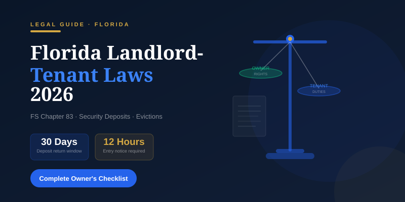

Florida Landlord-Tenant Laws 2026: Complete Guide for Rental Property Owners
Leyes de Arrendamiento en Florida 2026: Guía Completa para Propietarios
Everything Florida rental property owners need to know about Chapter 83 of the Florida Statutes — from security deposits to evictions — updated for 2026.
Todo lo que los propietarios de inmuebles de alquiler en Florida necesitan saber sobre el Capítulo 83 de los Estatutos de Florida — desde depósitos de garantía hasta desalojos — actualizado para 2026.

Florida FS Chapter 83 governs all residential landlord-tenant relationships statewide (Florida Legislature, 2026)El Capítulo 83 del FS de Florida rige todas las relaciones arrendador-inquilino residenciales en el estado (Legislatura de Florida, 2026)
Florida landlord-tenant law is primarily governed by Chapter 83 of the Florida Statutes — a detailed framework that dictates everything from security deposits to eviction timelines. Whether you own a rental condo in Miami, a townhouse in Tampa, or a single-family home in Orlando, knowing these rules protects you from costly legal mistakes. In 2026, Florida law continues to favor relatively landlord-friendly policies compared to many other states — but violations can be expensive. Fines, forfeited deposits, attorney fee awards, and even lease termination rights for tenants are all possible consequences of non-compliance. This guide covers the essentials every Florida rental property owner must understand before placing a tenant or drafting a lease.
Tip: Not sure if your lease complies with Florida law? Quantum Florida Management reviews and prepares compliant lease agreements as part of our Professional and Premium plans. See our plans.
Security deposits are one of the most frequently litigated areas of Florida landlord-tenant law. Getting the rules wrong — even accidentally — can cost you the entire deposit plus attorney fees. Here is what the law requires:
Maximum amount: Florida has no statutory limit on the security deposit amount, unlike many other states. You can charge one month, two months, or more depending on your risk assessment.
Storage requirements: Deposits must be held in a separate Florida bank account (not commingled with operating funds) OR a surety bond must be posted for the amount of the deposit.
Three holding options: (1) non-interest-bearing Florida bank account, (2) interest-bearing Florida bank account with interest paid to tenant at 75% of average rate, or (3) surety bond posted with the clerk of the circuit court.
Written notice required within 30 days: You must notify the tenant in writing of the name and address of the institution holding the deposit, the account type, and whether the deposit is earning interest.
Return timeline (no claim): If you make no deductions, the deposit must be returned within 15 days of lease termination and surrender of possession.
Return timeline (with deductions): If you are claiming deductions, you have 30 days to send the tenant a written notice of intent to impose a claim with an itemized list of deductions. The tenant then has 15 days to object.
Wrongful withholding penalty: If a landlord wrongfully withholds a deposit, the tenant may recover the entire deposit plus attorney fees — even if the tenant owed some damages.
Rule
Florida Requirement
Maximum deposit amount
No legal limit
Bank notice deadline
30 days from receipt
Return deadline (no claim)
15 days after termination
Return deadline (with deductions)
30 days — itemized notice required
Penalty for wrongful withholding
Full deposit + attorney fees
Warning: Florida courts take security deposit violations seriously. Always send itemized deduction letters by certified mail and retain receipts for all deductions. Failure to send proper notice within 30 days may forfeit your right to make any claim against the deposit.
Required Lease Disclosures in Florida
Florida law and applicable federal regulations require certain disclosures be made to tenants at or before the time of leasing. Missing a required disclosure can expose you to liability or give tenants grounds to void lease provisions. Required disclosures include:
Radon gas disclosure (required by Florida Statute 404.056): All Florida leases must include a specific statutory warning about radon gas, a naturally occurring radioactive gas.
Lead paint disclosure for properties built before 1978: Required under federal law (42 U.S.C. § 4852d). Landlords must provide the EPA pamphlet "Protect Your Family from Lead in Your Home" and disclose known lead hazards.
Identity and address of landlord or authorized agent: The tenant must be provided with the name and address of the person authorized to accept notices and receive rent.
Copy of HOA rules if applicable: If the property is governed by a homeowners association, the tenant must receive a copy of the HOA rules and regulations and must sign an acknowledgment.
Florida's Landlord & Tenant Act summary: For month-to-month tenancies, it is best practice (and in some circumstances required) to provide a summary of tenant rights under Chapter 83.
Energy efficiency disclosure: For older properties, landlords may be required to disclose energy efficiency information, particularly for properties in certain utility programs.
Landlord Entry Rights — Notice Requirements
One of the most common sources of landlord-tenant conflict in Florida is unauthorized entry by the landlord. Chapter 83 sets clear rules — and violating them can give tenants the right to terminate their lease.
Standard rule: Florida Statute 83.53 requires landlords to provide at least 12 hours advance notice before entering a rental unit for non-emergency purposes.
Permitted entry hours: Entry is restricted to 7:30 AM to 8:00 PM unless the tenant agrees to a different schedule.
Acceptable notice methods: Verbal notice, written notice, or a note posted on the door are all legally acceptable forms of notice.
Permitted reasons for entry: Repairs, inspections, showing the property to prospective tenants or buyers, and similar landlord business purposes.
Exceptions — no notice required: Genuine emergencies (fire, flood, gas leak), evidence of tenant abandonment, or a court order permitting entry.
Warning: Entering without proper notice — even to make repairs — can be considered landlord harassment under Florida law and give tenants legal grounds to terminate their lease without penalty. Document every entry with time-stamped notices.
Maintenance and Habitability Obligations
Florida Statute 83.51 imposes a duty on landlords to maintain rental properties in a habitable condition. These obligations exist regardless of what a lease says — a lease provision purporting to waive these requirements is generally unenforceable.
Landlord must maintain:
Working plumbing with adequate hot and cold running water
Functioning heating and cooling systems (when provided as part of the tenancy)
Pest control for common areas (unit-level pest control is typically the tenant's responsibility unless caused by structural issues)
Structural integrity of roof, windows, doors, and floors
Functioning smoke detectors and carbon monoxide detectors where required
Working locks and deadbolts on all exterior doors
Adequate lighting in common areas
Tenant responsibilities under Florida law:
Keep the unit clean and sanitary
Not destroy, deface, damage, or remove any part of the premises
Use plumbing fixtures, appliances, and facilities only as intended
Not permit more occupants than agreed in the lease
Report maintenance issues to the landlord in writing promptly
Seven-day notice to cure: If a tenant fails to meet their maintenance responsibilities, the landlord may issue a written seven-day notice requiring the tenant to remedy the condition. If the tenant does not comply within seven days, the landlord may proceed with eviction proceedings.
Florida Eviction Process — Step by Step
Florida has a well-defined statutory eviction process. Landlords who attempt to "self-help evict" — by changing locks, removing belongings, or shutting off utilities — face serious legal liability. Follow the proper legal process every time.
Issue proper written notice. The type of notice depends on the reason for eviction: a 3-day notice for non-payment of rent, a 7-day notice to cure for lease violations, or a 15-day notice to terminate a month-to-month tenancy without cause.
Wait for the notice period to expire. Do not file any court documents until the full notice period has passed and the tenant has not complied or vacated.
File eviction complaint in county court. The Complaint for Eviction is filed with the county court where the property is located. Filing fees typically range from $185 to $300 depending on the county.
Service of process on tenant. The tenant must be officially served with the summons and complaint by the county sheriff or a certified process server.
Tenant has 5 business days to respond. After service, the tenant has five business days to file a written response with the court.
Default judgment if no response. If the tenant fails to respond, the landlord may request a default judgment and the court will issue a Writ of Possession.
Court hearing if tenant responds. If the tenant files an answer, a hearing is typically scheduled within 5 to 15 days. The tenant must also deposit any disputed rent into the court registry.
Writ of Possession executed by sheriff. Once a judgment is entered, the sheriff provides 24 hours notice before physically removing the tenant and their belongings.
Step
Approximate Timeline
3-day notice period
Day 1–3
File complaint with county court
Day 4
Service of process on tenant
Day 5–8
Tenant response deadline
Day 13
Default judgment (if no response)
Day 14–17
Writ of possession issued
Day 15–20
Sheriff enforces writ
Day 16–21
Note: Florida's eviction process typically takes 3–5 weeks for uncontested cases. Contested evictions can take 2–4 months. Never attempt to self-help evict by changing locks or removing a tenant's belongings — it is illegal in Florida and can result in significant liability for the landlord.
Recent 2026 Florida Rental Law Updates
Florida's rental landscape continues to evolve. Here are the most relevant 2026 updates for property owners:
Application fee disclosures: Landlords are now required to provide an itemized list of tenant selection criteria before charging a rental application fee. This includes credit score thresholds, income requirements, and criminal history standards. Failure to disclose these criteria upfront limits the landlord's ability to keep the application fee.
Short-term rental regulations: Local municipalities across Florida are increasingly restricting Airbnb and VRBO-style rentals. Miami Beach, for example, enforces strict short-term rental zoning. Always verify your county and municipality's rules before listing on short-term rental platforms.
Landlord retaliation prohibition: Florida law prohibits landlords from raising rent, reducing services, or threatening eviction within one year of a tenant exercising a legal right — such as filing a code complaint or organizing with other tenants. Retaliation is presumed if adverse action occurs within this window.
Source of income protection in certain counties: Miami-Dade and Broward Counties prohibit housing discrimination based on a tenant's source of income, including Section 8 housing vouchers. Landlords in these counties cannot reject applicants solely because they receive housing assistance.
How Professional Property Management Reduces Legal Risk
Staying fully compliant with Florida landlord-tenant law is a significant ongoing responsibility. Many landlords — particularly those managing properties remotely or managing multiple units — find that professional property management not only reduces their workload but also substantially lowers their legal exposure.
Pre-screened, attorney-reviewed lease templates that include all required Florida disclosures, updated for current law.
Automated notice procedures including certified mail delivery and digital documentation of all tenant communications.
Maintenance documentation that creates a defensible record protecting against habitability claims and improper deduction disputes.
Separate escrow accounts for security deposit management, fully compliant with Florida Statute 83.49 reporting requirements.
Eviction coordination with Florida-licensed attorneys when necessary, ensuring every step of the legal process is handled correctly.
Can a Florida landlord charge more than one month's rent as a security deposit?
Yes. Florida has no statutory cap on security deposit amounts. Landlords may charge any amount they determine appropriate based on their risk assessment. However, the deposit must be held in a compliant Florida bank account or surety bond, and written notice must be sent to the tenant within 30 days of receipt.
How much notice does a Florida landlord need to give before entering a rental unit?
Florida Statute 83.53 requires at least 12 hours advance notice before non-emergency entry. Entry is limited to the hours of 7:30 AM to 8:00 PM unless the tenant agrees to different hours. Notice may be given verbally, in writing, or posted on the door.
How long does the Florida eviction process take?
An uncontested eviction (where the tenant does not file a response) typically takes 3 to 5 weeks from issuance of the initial notice. Contested evictions where the tenant files an answer and requests a hearing can take 2 to 4 months. The timeline also depends on court caseloads in your county.
What happens if a Florida landlord does not return a security deposit within the required time?
If a landlord fails to return a deposit within 15 days (no deductions) or fails to send a proper written notice of intent to claim within 30 days, the landlord forfeits the right to make any deduction from the deposit. The tenant may then sue to recover the full deposit plus attorney fees and court costs.
Protect Your Florida Rental Investment
Quantum Florida Management handles lease preparation, deposit compliance, maintenance documentation, and eviction coordination — so you never have to worry about Florida landlord-tenant law compliance again. Our flat-fee plans start at just $99/month.
La ley de arrendamiento en Florida está regida principalmente por el Capítulo 83 de los Estatutos de Florida — un marco detallado que regula todo, desde los depósitos de garantía hasta los plazos de desalojo. Ya sea que usted tenga un condominio de alquiler en Miami, una casa adosada en Tampa o una vivienda unifamiliar en Orlando, conocer estas reglas lo protege de costosos errores legales. En 2026, la ley de Florida sigue favoreciendo políticas relativamente amigables para los propietarios en comparación con muchos otros estados — pero las infracciones pueden ser costosas. Multas, pérdida de depósitos, condenas en costas de abogados e incluso derechos de rescisión de contrato para los inquilinos son posibles consecuencias del incumplimiento. Esta guía cubre los aspectos esenciales que todo propietario de inmuebles de alquiler en Florida debe entender antes de colocar a un inquilino o redactar un contrato de arrendamiento.
Consejo: ¿No está seguro de si su contrato de arrendamiento cumple con la ley de Florida? Quantum Florida Management revisa y prepara contratos de arrendamiento conformes como parte de nuestros planes Profesional y Premium. Vea nuestros planes.
Reglas de Depósito de Garantía según la Ley de Florida (Estatuto de Florida 83.49)
Los depósitos de garantía son una de las áreas más frecuentemente litigadas de la ley de arrendamiento de Florida. Equivocarse en las reglas — incluso accidentalmente — puede costarle el depósito completo más los honorarios del abogado. Esto es lo que exige la ley:
Monto máximo: Florida no tiene límite estatutario para el monto del depósito de garantía, a diferencia de muchos otros estados. Puede cobrar un mes, dos meses o más según su evaluación de riesgo.
Requisitos de custodia: Los depósitos deben mantenerse en una cuenta bancaria separada en Florida (no mezclada con fondos operativos) O debe publicarse una fianza por el monto del depósito.
Tres opciones de custodia: (1) cuenta bancaria en Florida sin intereses, (2) cuenta bancaria en Florida con intereses pagados al inquilino al 75% de la tasa promedio, o (3) fianza presentada ante el secretario del tribunal de circuito.
Aviso escrito requerido dentro de 30 días: Debe notificar al inquilino por escrito el nombre y la dirección de la institución que tiene el depósito, el tipo de cuenta y si el depósito está generando intereses.
Plazo de devolución (sin reclamación): Si no realiza deducciones, el depósito debe devolverse dentro de 15 días a partir de la terminación del contrato y la entrega de la posesión.
Plazo de devolución (con deducciones): Si está reclamando deducciones, tiene 30 días para enviar al inquilino un aviso escrito de intención de imponer una reclamación con una lista detallada de las deducciones. El inquilino entonces tiene 15 días para objetar.
Penalización por retención indebida: Si un propietario retiene indebidamente un depósito, el inquilino puede recuperar el depósito completo más los honorarios del abogado — incluso si el inquilino tenía algunos daños pendientes.
Regla
Requisito de Florida
Monto máximo del depósito
Sin límite legal
Plazo de aviso bancario
30 días desde la recepción
Plazo de devolución (sin reclamación)
15 días tras la terminación
Plazo de devolución (con deducciones)
30 días — aviso detallado requerido
Penalización por retención indebida
Depósito completo + honorarios de abogado
Advertencia: Los tribunales de Florida toman muy en serio las infracciones relacionadas con los depósitos de garantía. Siempre envíe cartas de deducciones detalladas por correo certificado y conserve los recibos de todas las deducciones. No enviar el aviso adecuado dentro de los 30 días puede hacer que usted pierda el derecho a realizar cualquier reclamación sobre el depósito.
Divulgaciones Requeridas para Propietarios en Florida
La ley de Florida y las regulaciones federales aplicables exigen que se hagan ciertas divulgaciones a los inquilinos en el momento del arrendamiento o antes. Omitir una divulgación requerida puede exponerlo a responsabilidad legal o dar a los inquilinos motivos para anular cláusulas del contrato. Las divulgaciones requeridas incluyen:
Divulgación de gas radón (requerida por el Estatuto de Florida 404.056): Todos los contratos de arrendamiento en Florida deben incluir una advertencia estatutaria específica sobre el gas radón, un gas radiactivo de origen natural.
Divulgación de pintura con plomo para propiedades construidas antes de 1978: Requerida por la ley federal (42 U.S.C. § 4852d). Los propietarios deben proporcionar el folleto de la EPA "Proteja a su familia del plomo en su hogar" y divulgar los riesgos conocidos de plomo.
Identidad y dirección del propietario o agente autorizado: Al inquilino se le debe proporcionar el nombre y la dirección de la persona autorizada para aceptar avisos y recibir el alquiler.
Copia de las reglas de la HOA si aplica: Si la propiedad está regida por una asociación de propietarios, el inquilino debe recibir una copia de las reglas y reglamentos de la HOA y debe firmar un reconocimiento.
Resumen de la Ley de Propietarios e Inquilinos de Florida: Para arrendamientos mes a mes, es una mejor práctica (y en algunas circunstancias requerida) proporcionar un resumen de los derechos del inquilino bajo el Capítulo 83.
Divulgación de eficiencia energética: Para propiedades más antiguas, los propietarios pueden estar obligados a divulgar información sobre eficiencia energética, particularmente para propiedades en ciertos programas de servicios públicos.
Derecho de Entrada del Propietario en Florida
Una de las fuentes más comunes de conflicto entre propietario e inquilino en Florida es la entrada no autorizada por parte del propietario. El Capítulo 83 establece reglas claras — y violarlas puede dar a los inquilinos el derecho de rescindir su contrato de arrendamiento.
Regla general: El Estatuto de Florida 83.53 exige a los propietarios proporcionar al menos 12 horas de aviso previo antes de entrar a una unidad de alquiler para propósitos no urgentes.
Horarios de entrada permitidos: La entrada está restringida de 7:30 AM a 8:00 PM a menos que el inquilino acepte un horario diferente.
Métodos de aviso aceptables: El aviso verbal, escrito o una nota publicada en la puerta son todas formas legalmente aceptables de notificación.
Razones permitidas para la entrada: Reparaciones, inspecciones, mostrar la propiedad a posibles inquilinos o compradores, y otros propósitos comerciales del propietario.
Excepciones — no se requiere aviso: Emergencias genuinas (incendio, inundación, fuga de gas), evidencia de abandono por parte del inquilino, o una orden judicial que permita la entrada.
Advertencia: Entrar sin el aviso adecuado — incluso para hacer reparaciones — puede considerarse acoso por parte del propietario bajo la ley de Florida y dar al inquilino fundamentos legales para rescindir su contrato sin penalidad. Documente cada entrada con avisos con marca de tiempo.
Obligaciones de Mantenimiento del Propietario
El Estatuto de Florida 83.51 impone a los propietarios el deber de mantener las propiedades de alquiler en condiciones habitables. Estas obligaciones existen independientemente de lo que diga un contrato de arrendamiento — una cláusula contractual que pretenda eximir estos requisitos generalmente no es ejecutable.
El propietario debe mantener:
Plomería funcional con agua fría y caliente adecuada
Sistemas de calefacción y refrigeración en funcionamiento (cuando se proporcionan como parte del arrendamiento)
Control de plagas en las áreas comunes (el control de plagas a nivel de unidad es típicamente responsabilidad del inquilino, a menos que sea causado por problemas estructurales)
Integridad estructural del techo, ventanas, puertas y pisos
Detectores de humo y monóxido de carbono en funcionamiento donde se requieran
Cerraduras y cerrojos funcionales en todas las puertas exteriores
Iluminación adecuada en las áreas comunes
Responsabilidades del inquilino bajo la ley de Florida:
Mantener la unidad limpia y en condiciones sanitarias
No destruir, desfigurar, dañar ni retirar ninguna parte de las instalaciones
Usar las instalaciones de plomería, electrodomésticos y servicios solo según lo previsto
No permitir más ocupantes de los acordados en el contrato
Reportar los problemas de mantenimiento al propietario por escrito de manera oportuna
Aviso de siete días para subsanar: Si un inquilino no cumple con sus responsabilidades de mantenimiento, el propietario puede emitir un aviso escrito de siete días exigiendo al inquilino que remedie la situación. Si el inquilino no cumple dentro de los siete días, el propietario puede iniciar procedimientos de desalojo.
Proceso de Desalojo en Florida: Paso a Paso
Florida tiene un proceso de desalojo estatutario bien definido. Los propietarios que intentan un "desalojo por cuenta propia" — cambiando cerraduras, retirando pertenencias o cortando los servicios públicos — enfrentan una seria responsabilidad legal. Siga el proceso legal apropiado en todo momento.
Emita el aviso escrito apropiado. El tipo de aviso depende del motivo del desalojo: un aviso de 3 días por falta de pago del alquiler, un aviso de 7 días para subsanar por infracciones del contrato, o un aviso de 15 días para terminar un arrendamiento mes a mes sin causa.
Espere a que expire el período de aviso. No presente ningún documento judicial hasta que haya transcurrido el período completo de aviso y el inquilino no haya cumplido ni desocupado.
Presente la demanda de desalojo en el tribunal del condado. La Demanda de Desalojo se presenta en el tribunal del condado donde se encuentra la propiedad. Los honorarios de presentación generalmente oscilan entre $185 y $300 según el condado.
Notificación judicial al inquilino. El inquilino debe ser notificado oficialmente con la citación y la demanda por el alguacil del condado o un notificador certificado.
El inquilino tiene 5 días hábiles para responder. Después de la notificación, el inquilino tiene cinco días hábiles para presentar una respuesta escrita ante el tribunal.
Sentencia en rebeldía si no hay respuesta. Si el inquilino no responde, el propietario puede solicitar una sentencia en rebeldía y el tribunal emitirá un Auto de Posesión.
Audiencia judicial si el inquilino responde. Si el inquilino presenta una contestación, generalmente se programa una audiencia dentro de 5 a 15 días. El inquilino también debe depositar el alquiler en disputa en el registro del tribunal.
Auto de Posesión ejecutado por el alguacil. Una vez que se dicta sentencia, el alguacil proporciona un aviso de 24 horas antes de retirar físicamente al inquilino y sus pertenencias.
Paso
Cronograma Aproximado
Período de aviso de 3 días
Días 1–3
Presentar demanda en el tribunal del condado
Día 4
Notificación judicial al inquilino
Días 5–8
Plazo de respuesta del inquilino
Día 13
Sentencia en rebeldía (si no hay respuesta)
Días 14–17
Auto de posesión emitido
Días 15–20
El alguacil ejecuta el auto
Días 16–21
Nota: El proceso de desalojo en Florida generalmente toma de 3 a 5 semanas para los casos no impugnados. Los desalojos impugnados pueden tardar de 2 a 4 meses. Nunca intente un desalojo por cuenta propia cambiando cerraduras o retirando las pertenencias de un inquilino — es ilegal en Florida y puede resultar en una responsabilidad significativa para el propietario.
Actualizaciones Legales 2026 que los Propietarios en Florida Deben Conocer
El panorama de alquiler en Florida continúa evolucionando. Aquí están las actualizaciones más relevantes de 2026 para los propietarios:
Divulgaciones de cuotas de solicitud: Los propietarios ahora están obligados a proporcionar una lista detallada de los criterios de selección de inquilinos antes de cobrar una tarifa de solicitud de alquiler. Esto incluye umbrales de puntaje crediticio, requisitos de ingresos y estándares de antecedentes penales. El incumplimiento en divulgar estos criterios por adelantado limita la capacidad del propietario para retener la tarifa de solicitud.
Regulaciones de alquiler a corto plazo: Los municipios locales en todo Florida están restringiendo cada vez más los alquileres estilo Airbnb y VRBO. Miami Beach, por ejemplo, aplica una zonificación estricta para alquileres a corto plazo. Siempre verifique las reglas de su condado y municipio antes de publicar en plataformas de alquiler a corto plazo.
Prohibición de represalias del propietario: La ley de Florida prohíbe a los propietarios aumentar el alquiler, reducir servicios o amenazar con el desalojo dentro de un año después de que el inquilino ejerza un derecho legal — como presentar una queja de código o organizarse con otros inquilinos. Se presume represalia si ocurre una acción adversa dentro de este período.
Protección por fuente de ingresos en ciertos condados: Los Condados de Miami-Dade y Broward prohíben la discriminación en vivienda basada en la fuente de ingresos del inquilino, incluidos los vales de vivienda de la Sección 8. Los propietarios en estos condados no pueden rechazar solicitantes únicamente porque reciben asistencia de vivienda.
Cómo la Administración Profesional de Propiedades Reduce el Riesgo Legal
Mantenerse completamente en cumplimiento con la ley de arrendamiento de Florida es una responsabilidad continua significativa. Muchos propietarios — particularmente aquellos que administran propiedades de forma remota o que gestionan múltiples unidades — encuentran que la administración profesional de propiedades no solo reduce su carga de trabajo, sino que también reduce sustancialmente su exposición legal.
Plantillas de contrato de arrendamiento revisadas por abogados que incluyen todas las divulgaciones requeridas de Florida, actualizadas para la ley vigente.
Procedimientos de aviso automatizados que incluyen entrega por correo certificado y documentación digital de todas las comunicaciones con los inquilinos.
Documentación de mantenimiento que crea un registro defendible que protege contra reclamaciones de habitabilidad y disputas de deducciones indebidas.
Cuentas de depósito en garantía separadas para la gestión del depósito de garantía, completamente conformes con los requisitos de informes del Estatuto de Florida 83.49.
Coordinación de desalojos con abogados con licencia en Florida cuando sea necesario, asegurando que cada paso del proceso legal se maneje correctamente.
¿Puede un propietario de Florida cobrar más de un mes de alquiler como depósito de garantía?
Sí. Florida no tiene un límite estatutario para los montos de depósito de garantía. Los propietarios pueden cobrar cualquier cantidad que consideren apropiada según su evaluación de riesgo. Sin embargo, el depósito debe mantenerse en una cuenta bancaria conforme en Florida o una fianza, y se debe enviar aviso escrito al inquilino dentro de los 30 días posteriores a la recepción.
¿Cuánto aviso necesita dar un propietario de Florida antes de entrar a una unidad de alquiler?
El Estatuto de Florida 83.53 requiere al menos 12 horas de aviso previo antes de una entrada no urgente. La entrada está limitada al horario de 7:30 AM a 8:00 PM a menos que el inquilino acepte horarios diferentes. El aviso puede darse verbalmente, por escrito o publicado en la puerta.
¿Cuánto tiempo tarda el proceso de desalojo en Florida?
Un desalojo no impugnado (donde el inquilino no presenta una respuesta) generalmente toma de 3 a 5 semanas desde la emisión del aviso inicial. Los desalojos impugnados, donde el inquilino presenta una contestación y solicita una audiencia, pueden tardar de 2 a 4 meses. El cronograma también depende de la carga de trabajo del tribunal en su condado.
¿Qué ocurre si un propietario de Florida no devuelve el depósito de garantía dentro del plazo requerido?
Si un propietario no devuelve el depósito dentro de los 15 días (sin deducciones) o no envía un aviso escrito adecuado de intención de reclamar dentro de los 30 días, el propietario pierde el derecho a realizar cualquier deducción del depósito. El inquilino puede entonces demandar para recuperar el depósito completo más los honorarios del abogado y las costas judiciales.
Proteja su Inversión de Alquiler en Florida
Quantum Florida Management se encarga de la preparación del contrato de arrendamiento, el cumplimiento del depósito, la documentación de mantenimiento y la coordinación del desalojo — para que nunca tenga que preocuparse por el cumplimiento de la ley de arrendamiento de Florida nuevamente. Nuestros planes de tarifa fija comienzan desde solo $99/mes.
Florida Statute Chapter 83 — Landlord and Tenant — Complete official text of Florida's residential and non-residential landlord-tenant law including security deposits, entry rights, and eviction procedures. — Texto oficial completo de la ley de arrendador e inquilino de Florida, incluyendo depósitos de garantía, derechos de entrada y procedimientos de desalojo.
Florida Bar — Landlord/Tenant Law Consumer Pamphlet — Plain-language guide to Florida landlord and tenant rights published by The Florida Bar for public education. — Guía en lenguaje sencillo sobre los derechos de propietarios e inquilinos en Florida, publicada por el Colegio de Abogados de Florida para educación pública.
Florida Courts — Eviction (Unlawful Detainer) Forms — Official court forms and procedural guides for the Florida eviction process, maintained by the Florida Supreme Court. — Formularios judiciales oficiales y guías de procedimiento para el proceso de desalojo en Florida, mantenidos por la Corte Suprema de Florida.
U.S. Department of Housing and Urban Development — Fair Housing Rights — Federal fair housing law requirements that Florida landlords must comply with, including protected classes and prohibited discrimination. — Requisitos federales de vivienda justa que los propietarios de Florida deben cumplir, incluyendo clases protegidas y discriminación prohibida.
Florida DBPR — Department of Business and Professional Regulation — Licensing, regulatory compliance, and complaint resolution for property managers and real estate professionals in Florida. — Licencias, cumplimiento normativo y resolución de quejas para administradores de propiedades y profesionales de bienes raíces en Florida.
All external links lead to official government websites or recognized legal organizations. Last verified: March 2026.
Todos los enlaces externos dirigen a sitios web oficiales del gobierno u organizaciones legales reconocidas. Última verificación: marzo 2026.